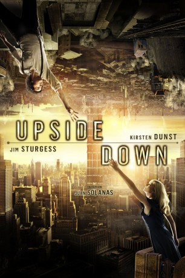

 
 IMDB-Wertung: 6.4 / 10
IMDB-Wertung: 6.4 / 10  Metascore:
Metascore: 
Stell dir vor, du schaust in den Himmel und siehst dort ganze Städte, Wälder und Ozeane mit einer eigenen Schwerkraft. Du siehst ein anderes Universum, ganz nah an deinem, aber trotzdem völlig unerreichbar. So ergeht es Adam, einem gewöhnlichen jungen Mann in einer ungewöhnlichen Welt. Er lebt bescheiden sein eigenes Leben, doch er denkt immerzu nur an Eden, ein Mädchen, das er einmal getroffen hat, als er noch ein kleiner Junge war. Sie lebt in dem anderen Universum, das sich direkt über ihm befindet. Dieses Universum ist im Gegensatz zu seinem eigenen wohlhabend, für Adam steht dort jedoch praktisch alles auf dem Kopf. Eden scheint unerreichbar. Der Kontakt zwischen beiden Erden ist von der Regierung strengstens untersagt. Als er eines Tages einen Blick auf die erwachsene Eden erhascht, beschließt er, um seine große Liebe zu kämpfen … auch wenn er dafür die Gesetze der Physik außer Kraft setzen muss…
Jahr: 2012
Dauer: 114 Minuten
FSK: 6
Land: Kanada Studio: Concorde FilmverleihTonspuren: DTS - ,
Untertitel: Deutsch,
Auflösung: 1080p (1920x816) Größe: 7741 MB
Genre: Drama, Fantasy, Liebe, Sci-Fi
Regisseur: Juan Solanas
Drehbuch: Juan Solanas, Juan Solanas, Santiago Amigorena, Pierre Magny
Soundtrack: Benoît Charest
Darsteller:
 Jim Sturgess als Adam
Jim Sturgess als Adam Kirsten Dunst als Eden
Kirsten Dunst als Eden Timothy Spall als Bob Boruchowitz
Timothy Spall als Bob Boruchowitz Blu Mankuma als Albert
Blu Mankuma als Albert James Kidnie als Lagavullan
James Kidnie als Lagavullan Vlasta Vrana als Mr. Hunt
Vlasta Vrana als Mr. Hunt John Maclaren als Moderator
John Maclaren als Moderator Larry Day als Soldier
Larry Day als Soldier Chevy Lamont Cofield als Lester , uncredited
Chevy Lamont Cofield als Lester , uncreditedDatei: X:\2012(N-Z)\Upside Down (2012, FSK6, 1920x816) 3D.mkv seit 30.04.2015
Festplatte: HD 2012(N-Z)-2013(A-H)
 Es gibt insgesamt 138 Filme in der Gruppe '2012(N-Z)'
Es gibt insgesamt 138 Filme in der Gruppe '2012(N-Z)'